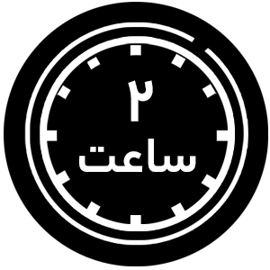

تارت قهوه
مدت زمان لازم جهت آماده سازی
1 فنجان آرد الک شده را با 2 قاشق چایخوری نشاسته ذرت و 3 قاشق چایخوری پودر کاسترود و 1 ساشه قهوه 3 در 1 تیمز را بهصورت دستی مخلوط کرده و کنار میگذاریم. سپس 100 گرم کره را با 4/1 فنجان پودر قند و 1 عدد زرده تخممرغ و 8/1 قاشق چایخوری وانیل و را با هم زن برقی مخلوط میکنیم. مواد قبلی را که کنار گذاشته بودیم به آنها اضافه میکنیم. مخلوط حاصل را دستی هم میزنیم. سپس با دست ورز داده و با وردنه صاف میکنیم و در نایلونی درون یخچال به مدت 1 ساعت قرار میدهیم و سپس کف یک سینی کمی آرد ریخته و روی آن دوباره با وردنه ورز میدهیم و درون قالب ریخته و 25 دقیقه در دمای 180 درون فر قرار میدهیم. سپس 1 ساشه کاپوچینو و 3 قاشق غذاخوری آب را در حرارت هم زده و 200 گرم خامه و 1 قاشق غذاخوری عسل به آن اضافه میکنیم و 2 قاشق چایخوری نشاسته ذرت و 15 گرم کره اضافه کرده و دستی روی حرارت هم میزنیم و مواد حاصل را رو قالبی که در یخچال قرار داده بودیم پخش کرده و روی آن چیپس شکلات میپاشیم و در یخچال به مدت 2 ساعت قرار میدهیم. تارت قهوه ما آماده میل کردن است.